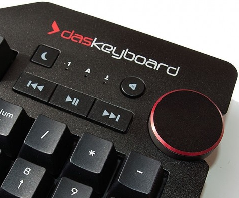
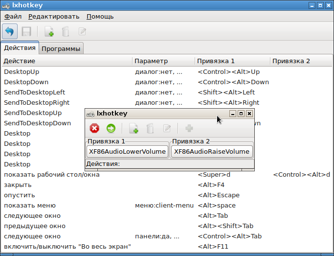
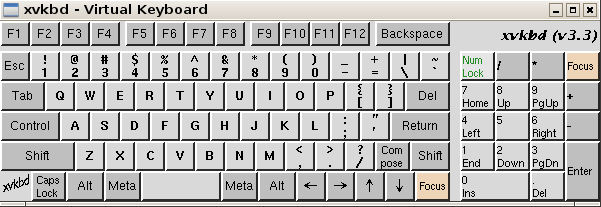
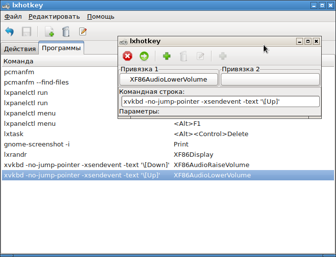

Имеются модели клавиатур DasKeyboard (Das Keyboard 4 Professional DASK4MKPROSIL-USEU-3G7-r1.4), у которых есть крутящийся регулятор громкости:

Этот регулятор можно использовать для скроллинга, так же, как это происходит при вращении колесиком мышки.
Вначале надо выяснить, как называются клавиши, которые виртуально "нажимаются" при вращении регулятора громкости на клавиатуре DasKeyboard. В среде LXDE это можно сделать с помощью программы lxhotkey, которая вызывается в меню Параметры -> Настроить горячие клавиши:

Чтобы выяснить названия кнопок громкости, надо нажать кнопку добавления нового действия. Когда появляется окно нового действия, можно нажать на кнопку Привязка 1 или Привязка 2. После чего надо нажать нужную клавишу или покрутить колесиком громкости. Будет отображено название нажатай клавиши. Видно, что названия клавиш следующие:
Настроить скроллинг можно во вкладке Программы. Основная идея в том, что на нажатие кнопок громкости надо навесить выполнение программы виртуальной клавиатуры. Виртуальная клавиатура будет просто выполнять нажатие на кнопки Up или Down. Программа "Виртуальная клавиатура" в Linux называется xvkbd.

Если запускать команду xvkbd без параметров, на экране появится изображение виртуальной клавиатуры. Однако, у этой утилиты есть опции командной строки, с помощью которых можно просто выполнить нажатие на нужную кнопку, причем без создания GUI-интерфейса.
На вкладке "Программы" надо создать два действия.

Для кнопки XF86AudioRaiseVolume надо прописать команду нажатия кнопки вниз:
xvkbd -no-jump-pointer -xsendevent -text '\[Down]'
А для кнопки XF86AudioLowerVolume надо прописать команду нажатия кнопки вверх:
xvkbd -no-jump-pointer -xsendevent -text '\[Up]'
После сохранения этих настроек иксы следует перезагрузить. Для openbox в LXDE вместо перезагрузки можно дать команду перечитывания конфигурации:
openbox --reconfigure
Итого: данные настройки позволяют работать прокрутке с помощью регулятора громкости так же, как это выглядит при вращении колесиком мышки.
Примечание 1: Когда происходит запоминание команды xvkbd ... для перемещения вверх-вниз, она записывается в файл:
~/.config/openbox/lxde-rc.xml
Проблема в том, что в этой команде используются апострофы, а апострофы в явном виде не могут быть записаны в XML-формат, и будут преобразованы в сущность &. И непонятно, учитывается ли это обстоятельство при выполнении команды. Во всяком случае, у автора этой статьи выполнение команд перестало работать после перезагрузки, хотя команды после перезагрузки остались в этом конфигурирующем XML-файле.
Для избежания проблем в прописывании команды, лучше создать два скрипта с данными командами, и вызывать уже их. В скриптах можно прописать все что угодно, даже логирование факта прокрутки вверх/вниз.
Примечание 2: Если сконфигурировать через lxhotkey не получается, или используется другое окружение рабочего стола типа KDE, Gnome, Mate, LxQt и прочее, то настройку можно сделать через механизм xbindkeys. Обсуждение такой настройки расположено здесь:
https://www.linux.org.ru/forum/desktop/15294311
Кратко, в файле пользователя ~/.xbindkeysrc надо прописать примерно такие опции:
"/opt/script/keyboardVolumeUp.sh"
XF86AudioRaiseVolume
"/opt/script/keyboardVolumeDown.sh"
XF86AudioLowerVolume
В bash-скриптах keyboardVolumeDown.sh и keyboardVolumeUp.sh прописываются команды нажатия клавиш вниз и вверх. Данная настройка считается независимой от окружения рабочего стола.